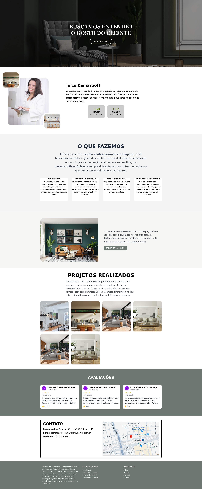

Portflólio
Um site institucional para a arquiteta Joice Camargott, que destaca sua expertise em reformas e decoração de ambientes residenciais e comerciais. A página inicial abre com um hero visual impactante e call‑to‑action “Ver Projetos”, seguido por uma bio que enfatiza seus 17 anos de experiência e mais de 68 imóveis reformados. Cada bloco de “O que fazemos” apresenta, de forma clara, os 4 serviços oferecidos (Arquitetura, Design de Interiores, Assessoria de Obra e Consultoria Decorativa), com ícones e textos objetivos. A seção de “Projetos Realizados” exibe um gallery grid responsivo de fotos de ambientes prontos, e o rodapé inclui avaliações de clientes e um formulário de contato integrado ao Google Maps para localização do escritório.